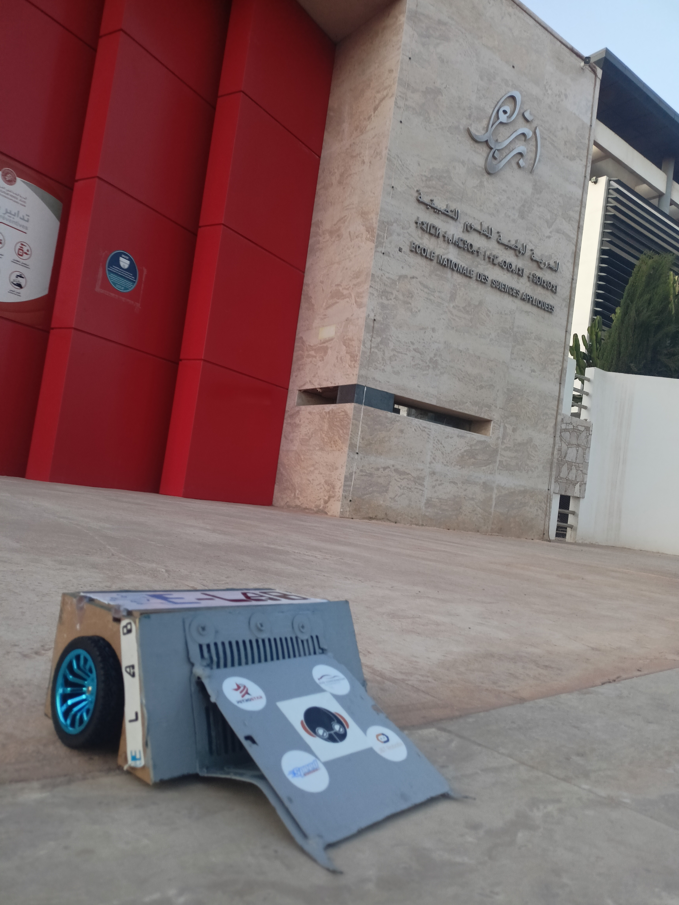

Club Electrolab · Conférences · Séminaires · Compétitions
Tout au long de mon parcours, de l'EST Kénitra à l'ENSET Mohammedia, je me suis investi dans la vie associative et technique : encadrement d'une cellule technique, organisation d'événements, interventions en conférence et participation à de nombreuses compétitions. Ces expériences m'ont appris à diriger une équipe, organiser des projets et communiquer sur des sujets techniques.
Club Electrolab
Robotique
Sensibilisation aux risques industriels
Conférence des lauréats, EST Kénitra
Production 4.0 et Maintenance Prédictive
Somo Robot, CircuitJam24, CircuitJam25
Encadrement de l'équipe technique du club et pilotage de ses projets.
Conception et organisation d'une compétition de robotique au sein de l'école.
Organisation et animation d'une conférence de sensibilisation aux risques industriels.
Intervention auprès des étudiants de mon ancienne école pour partager mon parcours de lauréat. Certificat d'appréciation.
Participation au séminaire, en lien direct avec mon projet de fin d'études en maintenance prédictive.
Participation à la compétition de robotique avec le robot conçu avec mon équipe.
